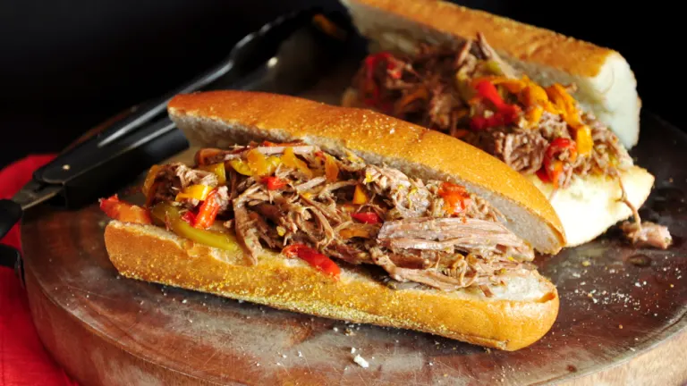

Chicago Italian Beef Sandwiches

Description
With this quick and easy recipe, all you need is a slow cooker and a rump roast to be enjoying Chicago-style Italian beef sandwiches fromt he comfort of your own home!
Ingredients
- 5 lbs - rump roast
- 2 - 10 1/4 oz cans beef consomme
- 1 - 1 oz package Good Seasonings Italian salad dressing mix
- 1 - jar pepperocini pepper
- 1 - jar giardiniera
- 3 - large sweet green peppers
- 1 - loaf french bread
Directions
- Combine rump roast, beef consomme, Italian salad dressing mix, pepperocini peppers, and giardiniera in slow cooker. Cook on low for 18 hours. Turn rump roast over every six hours.
- At hour 17 of cooking, cut sweet green peppers into eighths lengthwise and cook in water on low heat until soft.
- Cut french bread into 6 inch lengths and slice open on the side lengthwise.
- When roast has finished cooking, pull apart with a fork. Using tongs, pile bread with meat and juices.
- Add strips of sweet green peppers to sandwich.
- OPEN WIDE and enjoy!